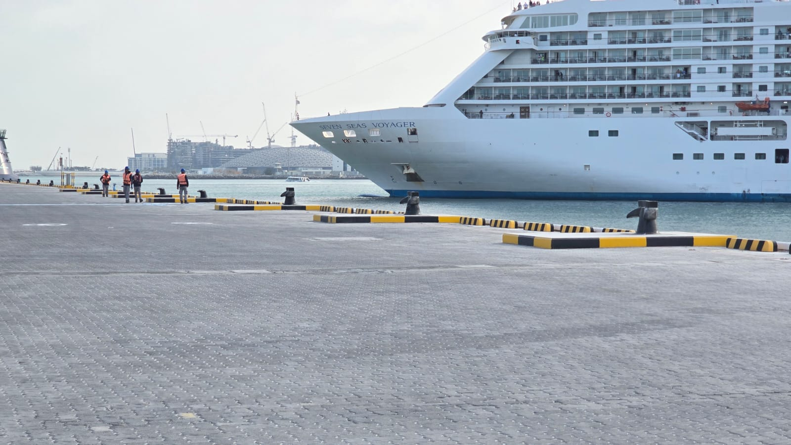
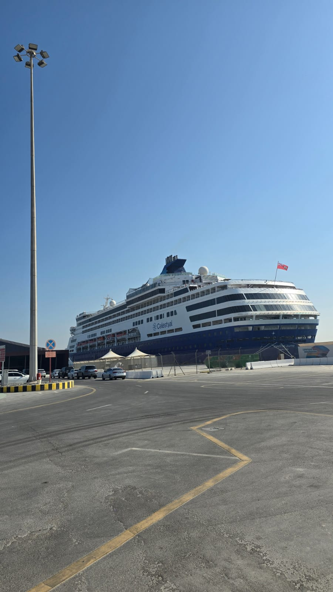
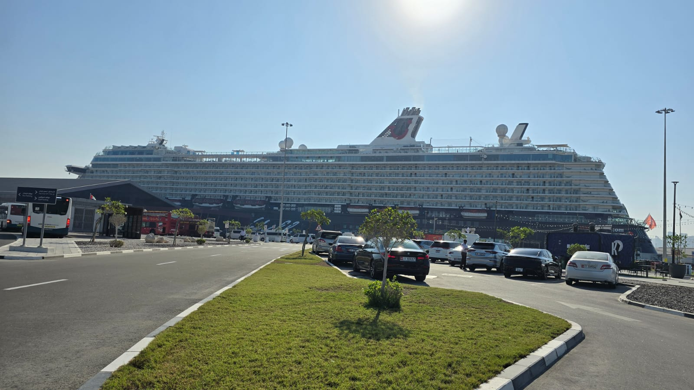
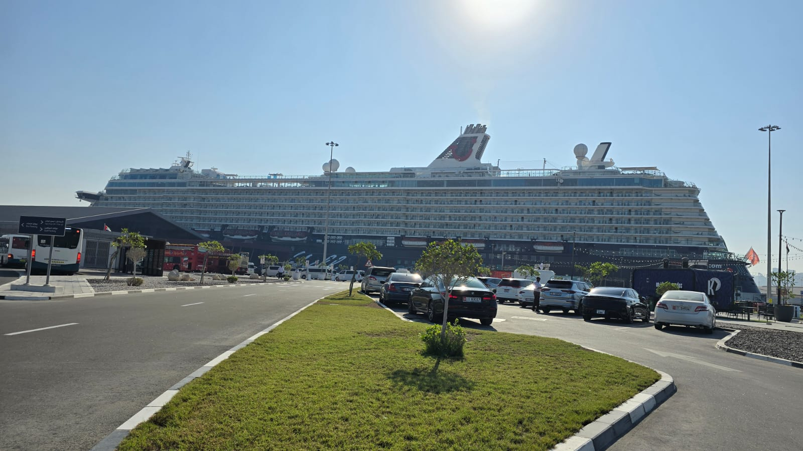

CRUISE VESSEL
A cruise vessel is a ship specially designed to accommodate passengers in comfortable manner on journey to experience various destinations on the way.
Cruise Vessel Unique Characteristics
The safety of the guests and crew is always the top priority onboard a cruise vessel and requires dedication by crew and shoreside management. Cruise specific ISM manuals, frequent emergency response trainings as well as proper safety equipment maintenance are important to achieve this goal.
As part of the guest experience, cruise vessels often visit unique places far from common shipping routes which requires diligent planning and operating knowledge.
The cruise industry is driven by innovation in technology and with a strong focus on environmental friendliness, which demands highly qualified staff to cope with the frequent developments.

Cruise Ships
Cruising has become a major part of the tourism industry, with an estimated market of $23.8 billion per year, and over 13.9 million passengers carried worldwide according to Cruise Market Watch’s projections for 2021.
Cruise ships are large capital investments with high operating costs, and a complete hospitality staff in addition to the usual ship's crew. Crew are usually hired on three-to-eleven-month contracts which may then be renewed as mutually agreed, depending on service ratings from passengers as well as the cyclical nature of the cruise line operator.
Our Expertise in Cruise Ship Management
BSM is your cruise ship manager of choice thanks to its extensive track record in this space. We are dedicated to maximising passenger safety, comfort and operational reliability through a pool of personnel with many years of experience in the cruise business, including technical and marine superintendents, crew managers and senior management members. In addition, BSM offers technical management, crew management, software solutions, superyacht crew recruitment, newbuilding supervision as well as fleet maintenance and repair.

 
